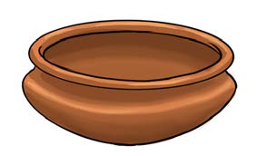
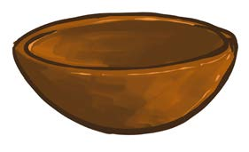
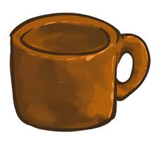

3. Name any two materials, other than clay that can be used to model various shapes.
Methods in clay modelling
There are various ways of modelling different figures. These include pinching, slab construction and coiling. Clay modelling requires clay well-prepared soil. Hence, it can produce a suitable figure for various uses.
The pinching method
Using this method, one can produce pots, cups, bowls, plates, jugs or round planters and ark-shaped objects. Figure 1 shows clay vessels made by the pinching method.
Pot
Bowl
Cup



Figure 1: Clay objects made by pinching
Steps to prepare clay soil
Before modelling, prepare clay soil in the following ways.
1. Pound the clay soil until it gets soft.